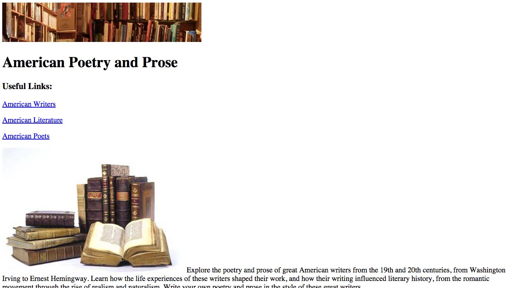
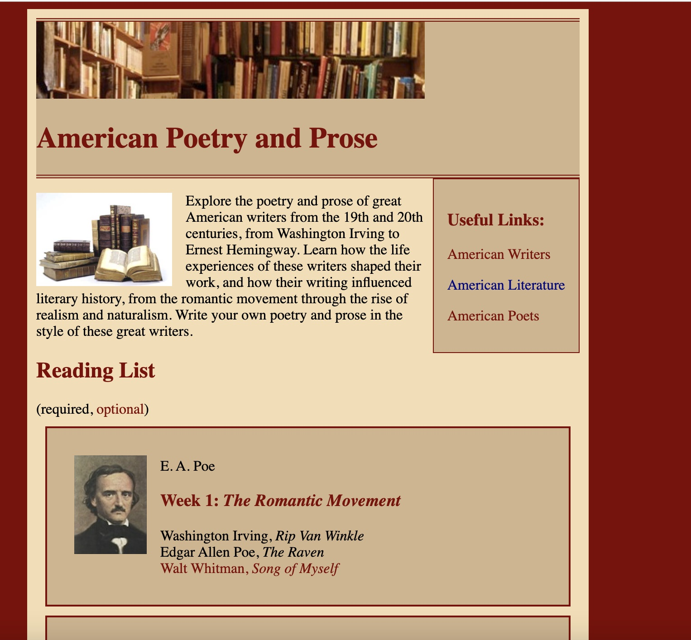

Here are some main points to remember from the past few lectures:
float: left means that text from below it can move up next to it (to
its right, in this example). Typically the only thing that uses float are images so they can be embedded
within text.float: center.clear:left on that element.
display: flex and
flex-direction: some direction.
flex: 1 1 x%
.In the following exercise, we are going to convert this initial page into the page shown below. Here are side-by-side screenshots:
| Before, no CSS | After, lots of CSS (final image) |
|---|---|
|  |  |
Open Excercise 1 under the
Position Practice section, do the following:
h1, h2, and h3 elements maroon.nav and make the background color tan.body
maroon. Make the background color for the inner part wheat.
Make the inner part 600px wide and center it.
week:
week is comprised of a photo class and info class.
week a flex container with a row direction to contain both the photo and
info.
optional maroon.header have a 4px double maroon border, but only -top and
-bottom, not -left and -right. Make the background color tan.
nav:
nav so that it appears to right of introductory text:
div with id of introNav. It contains both the nav
and the introductory text with the id intro (in that order)introNav a flex container with the nav and
intro as it's flex items
Open Excercise 2 under the
Position Practice section.
Hit run and open in Chrome to see what happens to
the text and images when you resize the browser window. Then, do the following:
body element to set the background to lightgray. img elements to float them on the right side and look like
this image.